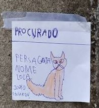

{% extends "base.html" %}
{% block title %}
{{ super() }}
- About
{% endblock %}
{% block content %}
About

The fear of losing sight of our pets seems like a nightmare!
But nowadays, in a digital world, what is the best platform to find our pets?
With that in mind, we created Find My Pet.
It brings together practicality and to help everybody find their lost pets.
{% endblock %}